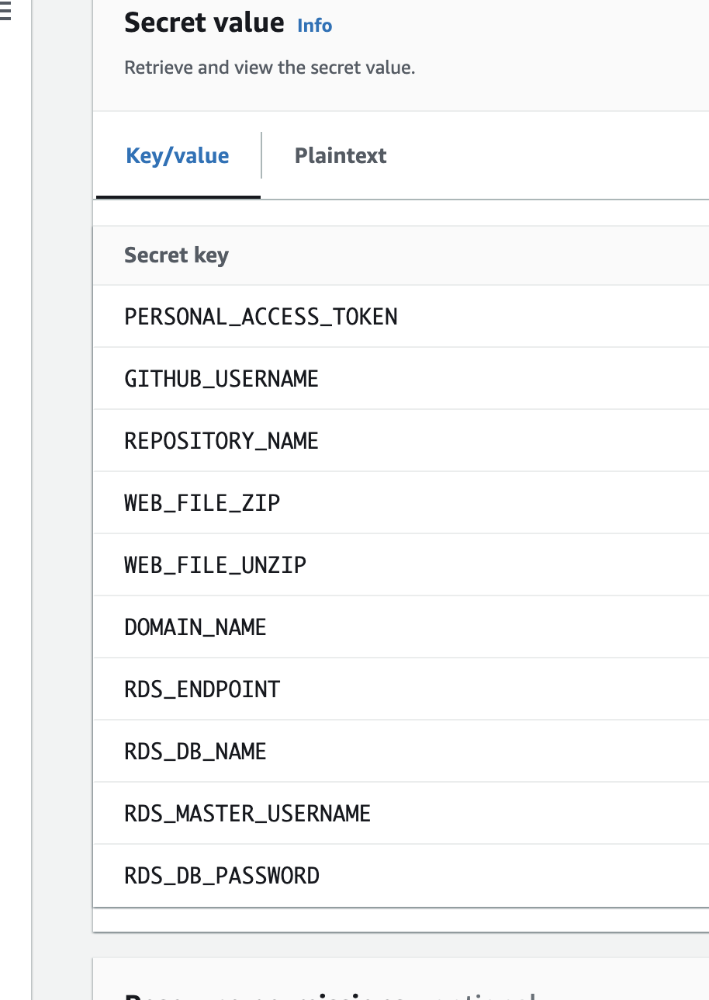
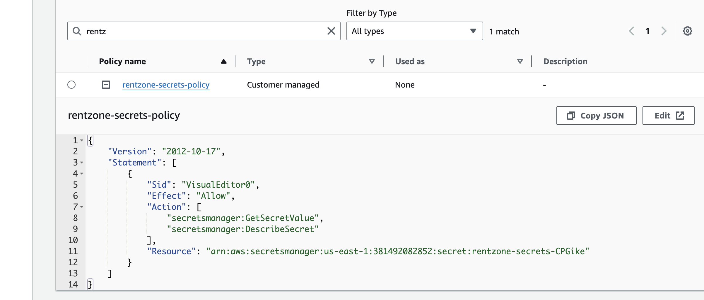
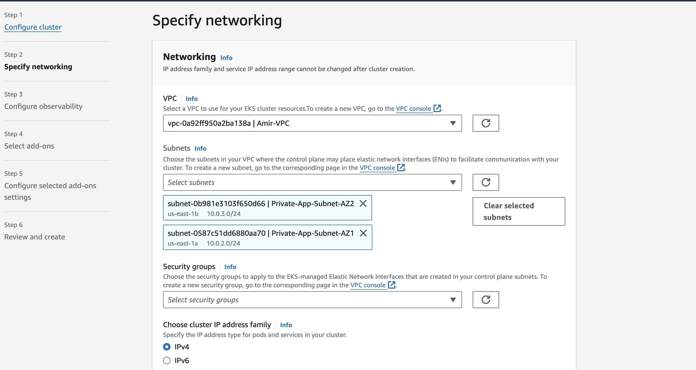
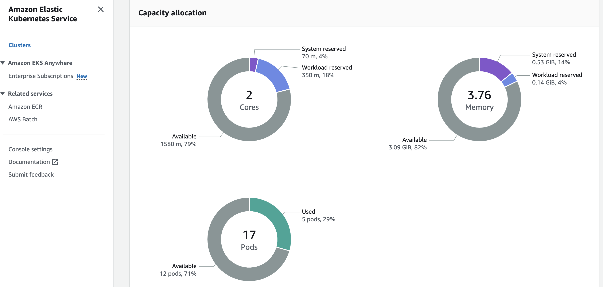
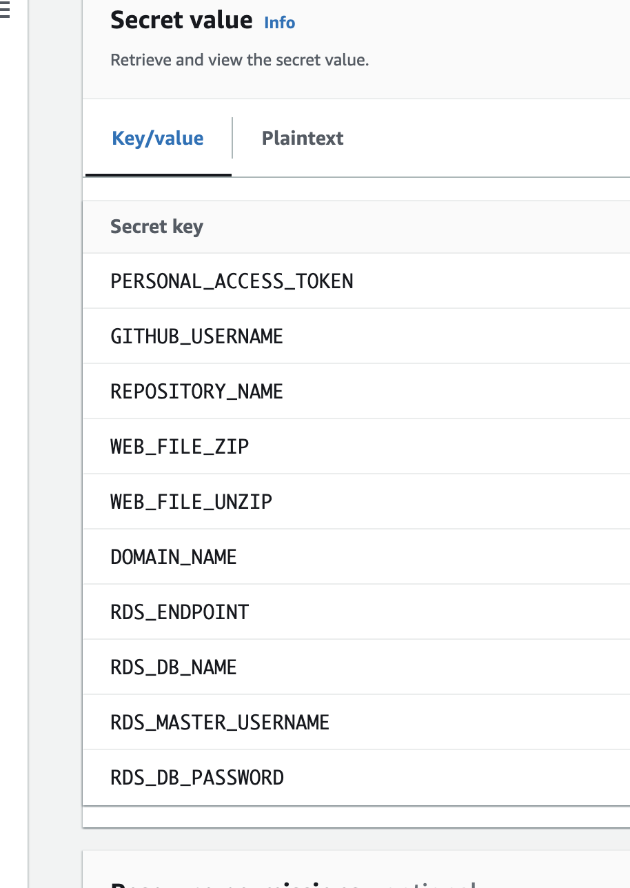
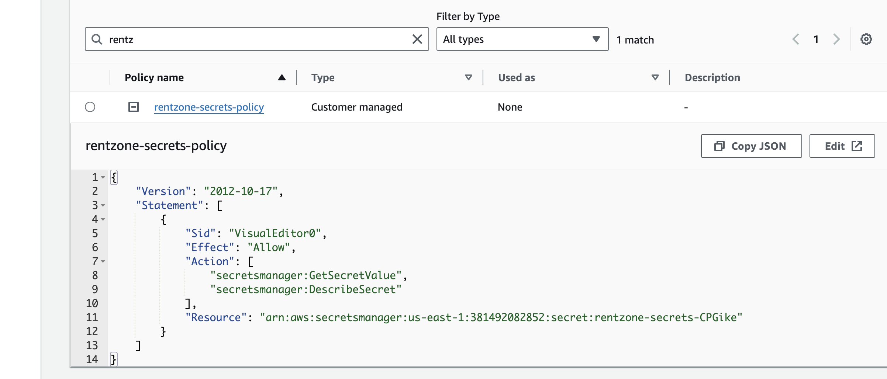
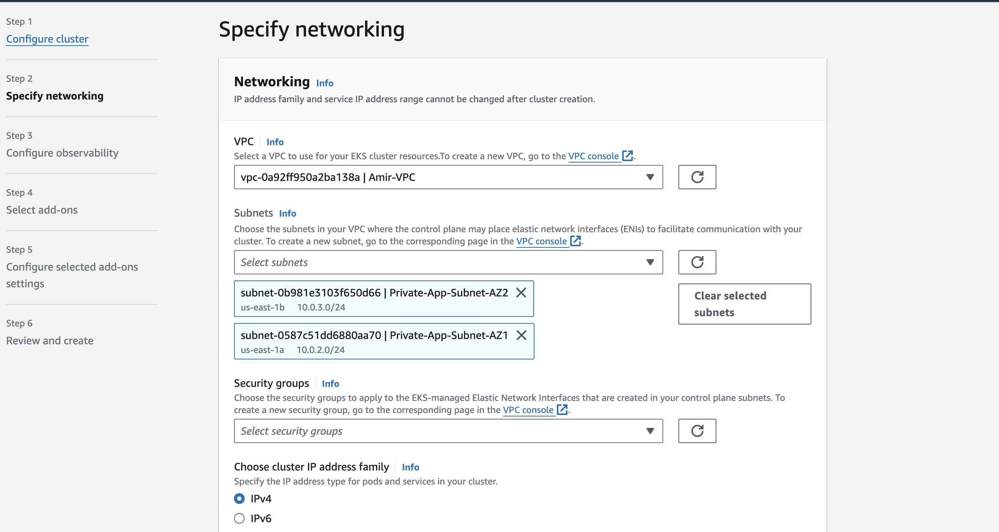
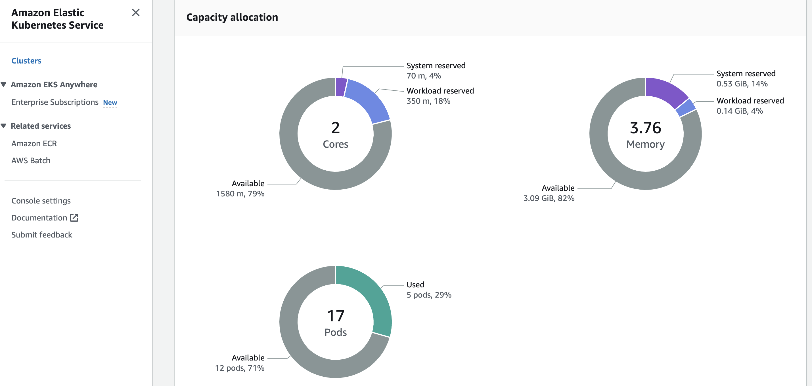

Kubernetes and Amazon EKS Project
 







×

Project Highlights
- Version Control: Used Git and GitHub for seamless collaboration.
- Containerization: Created Dockerfiles and containerized the application.
- AWS Setup: Configured AWS services including ECR, RDS, and Secret Manager.
- ECR Integration: Built and pushed Docker images to Amazon ECR.
- Data Management: Migrated application data to Amazon RDS.
- Kubernetes Tools: Managed clusters with kubectl, eksctl, and Helm.
- Security: Secured sensitive information with AWS Secrets Manager.
- Cluster Setup: Deployed and managed an EKS cluster.
- Deployment: Deployed applications using Kubernetes manifests.
- DNS Configuration: Set up DNS for seamless application access.
- VPC Setup: Created a VPC with subnets, NAT gateways, and route tables.
- Command Line Operations: Executed setup and deployment via terminal commands.
- EC2 Instance Connect Endpoint: Secured data migration, terminating the instance post-migration.
Understanding AWS EKS and Worker Nodes
- Control Plane: AWS EKS manages the Kubernetes control plane, including the API server and etcd database, ensuring high availability and scalability.
- Worker Nodes: EC2 instances registered with the EKS cluster run application workloads. Auto Scaling groups manage the number of worker nodes based on demand.
- Networking: Configured networking settings for secure and efficient communication between the control plane and worker nodes, and among the worker nodes themselves.
- Monitoring and Logging: Integrated CloudWatch for monitoring and logging the performance and health of the EKS cluster.
Key Learning Outcomes
- Integrated Docker and Kubernetes with AWS services.
- Practiced container orchestration and management.
- Enhanced skills in secure secret management and data migration.
- Deepened understanding of EKS, worker nodes, control planes, and networking.
- Adapted the LAMP (Linux, Apache, MySQL, PHP) stack to a cloud-native architecture.
- Designed and implemented a robust VPC from scratch.